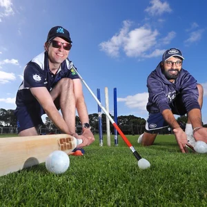

Wisdom Around the Table
Our Renowned Guests
Main content
Meet the visionary founders, seasoned investors, and creative specialists who have sat at Flow's Table to share their life journeys and business insights.
At Flow's Table, we believe that the best learning happens in safe, supportive, and open-minded spaces. Over the years, we have been honored to host some of the most prominent builders, tech executives, and financial mentors in the country. Here are some of the distinguished guests who have shared their wisdom with our community.
P'Mi Tiwa Shintadapong
Legendary Value Investor & MentorOne of Thailand's most renowned Value Investors, specializing in identifying structural market trends and global tech business models. As a cornerstone of Flow's Table, he regularly shares his 'wisdom over information' mindset and guides the natural flow of dialogue.
P'Jekky Suthon Singhasitthangkul
VI & Turnaround StrategistA highly respected investor famous for his bottom-fishing strategy of finding value in undervalued, turnaround assets. He shares deep wisdom on managing market risk and personal development, believing that investing is the art of seeing value when others cannot.
P'Pom Pawoot Pom Ponpipat
Founder, TARAD.com & InvestorWidely recognized as the 'Godfather of Thai E-Commerce,' having built and scaled TARAD.com and invested in over 60 startups. At the table, he shares data-driven leadership strategies and lessons learned from launching ventures since age 23.
Shark Jing Chanapun Juangroongruangkit
VP, Thai Summit & VC InvestorAn influential corporate leader and investor featured on Shark Tank Thailand, managing industrial manufacturing across 8 countries. She shares her insights on strategic human resource planning, life balance trade-offs, and her vision for special-needs education.
Dr. Kid Supachai Parchariyanon
Co-Founder, RISE Corporate InnovationCo-founder of RISE, a premier corporate innovation accelerator in Southeast Asia. A leading entrepreneur and angel investor, he mentors the community on scaling organizations through strategic innovation and building collaborative corporate ecosystems.

P'Toy Kasidis Satangmongkol
Founder, DataRockie & EducatorThe educator behind one of Thailand's largest online data science platforms, teaching technical skills to tens of thousands of students. He brings a unique blend of tech, philosophy, and solopreneurial strategies to Flow's Table conversations.
P'Tre Kittipol Pramoj
Former MD, Sammakorn & Racing ChampionA versatile leader who transitioned from corporate property development at Sammakorn to competing as a national champion racing driver. He mentors the community on operational resilience, risk calculation, and maintaining focus through life-altering setbacks.
P'Mek Nithi Satchatippavarn
CEO & Co-Founder, MyCloudFulfillmentA leading e-commerce entrepreneur who pioneered tech-enabled fulfillment solutions in Thailand. He shares lessons on logistics optimization, inventory management, and securing venture capital backing.
P'Pek Punyawe Chantarakajorn
Professional Trader & AuthorA prominent trader who started his career as a Japanese voice actor before transitioning to financial markets. He shares expertise on trading psychology, technical analysis, and navigating stock market fluctuations.
P'Benz Arnun Treetitiapt
Solopreneur & Digital Growth EducatorA highly successful digital entrepreneur and solopreneur who pioneered self-funded educational courses. At the table, he shares actionable frameworks on launching one-person businesses, designing high-margin digital assets, and building active online audiences.
Shark Benz Vorapat Chavananikul
Investment Director, Singha VenturesA seasoned corporate venture capitalist managing startup investments for Singha Corporation. He guides the table on VC criteria, founder evaluations, and the importance of alignment in values and ethics.
P'Frung Narikun Ketprapakorn
Actress, Doctor & Content CreatorA beloved Thai actress, doctor, and content creator who shares her journey balancing medical practice with media production. She brings inspiring insights on discipline, mental wellness, and finding passion in multi-hyphenate careers.
P'Kok Tanarat Ruckariyapong
Co-Founder & CEO, Guss Damn GoodCo-founder and CEO of Guss Damn Good, a premium craft ice cream brand known for story-driven flavors and strong community engagement. He shares insights on brand building, experiential marketing, and entrepreneurial resilience.
P'Em Udomsak Rakwongwan
Co-Founder, Forward DeFi & Crypto ExpertCo-founder of Forward DeFi and a prominent expert in blockchain technology, algorithmic trading, and decentralized finance. He shares complex financial wisdom, global macroeconomic perspectives, and the future of digital assets.
P'Peesamac Peesadech Pechnoi
Creative Content Creator & WriterA creative content creator and writer renowned for crafting highly engaging stories, brand campaigns, and cultural reflections. He brings perspectives on the creative process, storytelling mechanics, and connecting with modern audiences.
P'Golf Natthakorn Wiangin
Tech Lead & Software EngineerA seasoned tech lead and software engineer specializing in scalable system architectures and digital product delivery. He shares wisdom on engineering culture, managing technical debt, and building high-performance tech teams.
P'Nui Pongsuk Hiranprueck
CEO, Show No Limit & Tech InfluencerRenowned tech influencer, show host, and CEO of Show No Limit (beartai). He brings extensive experience in digital media production, tech consumer trends, and public speaking, sharing how to bridge technology with mass audiences.
P'Shane Prachaya Mora
Co-Founder & CTO, Tech SpecialistA seasoned tech entrepreneur and Chief Technology Officer specializing in building scalable software platforms and digital experiences. He shares insights on software craftsmanship, tech stack optimization, and product-market fit.
P'Phone Ruttanun Vilailuck
Business Development & Tech InvestorA dynamic business executive and tech investor specializing in corporate strategy, partnerships, and venture capital. He shares wisdom on expanding business networks, identifying high-growth investments, and corporate growth.
P'Pol Amorpol Huvanandana
Co-Founder & CEO, MoreloopCo-founder and CEO of Moreloop, a circular economy startup converting surplus fabric into high-value products. He brings deep insights on sustainability, green tech business models, and environmental impact strategies.
P'Pat Naranpat Thitipattakul
Tech Product Lead & Marketing StrategistA product management lead and marketing strategist who builds customer-centric digital products. She shares strategies on agile product development, user experience design, and data-driven marketing campaigns.